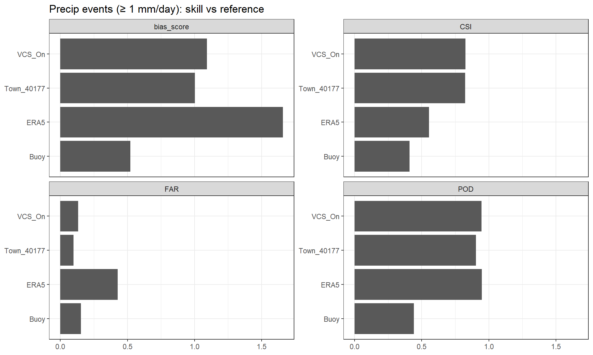
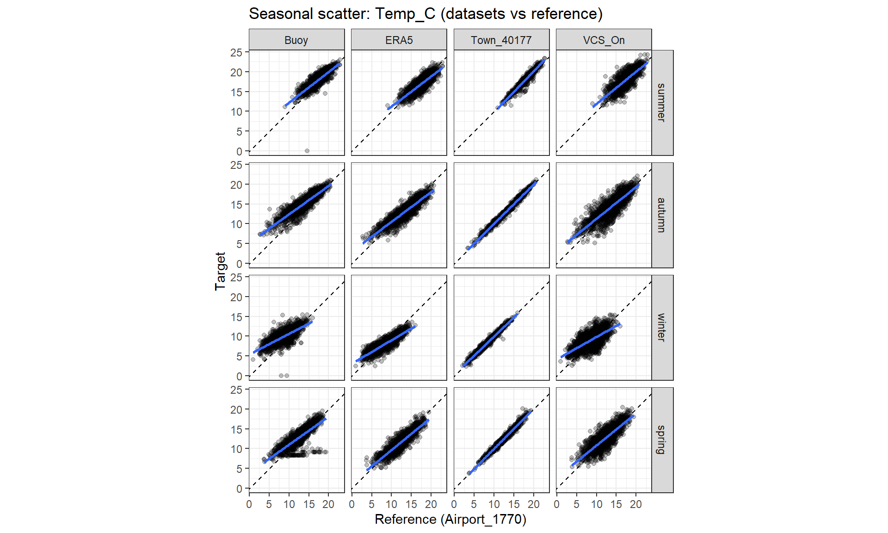

Seasonal and Event Behaviour
This page focuses on behaviour: when datasets agree on events, where they miss each other (zeros vs non-zeros, timing offsets, extremes), and how seasonality shows up.
Precipitation event structure
The following plots show how precipitation volumes and timing align across datasets.

Cumulative distribution functions (CDFs) of daily precipitation for each dataset relative to the reference. Curves further to the right indicate heavier tails (more high‑rain days), while curves higher at low precipitation indicate more light‑rain or dry days.
ERA5’s curve is shifted rightward, indicating more frequent moderate–high rainfall (wet bias). The buoy curve rises faster at low precipitation, indicating fewer heavy‑rain days and a tendency toward under‑reporting. Town_40177 and VCS_On track the reference most closely across the distribution, suggesting better alignment in both light and heavy rain frequencies.

Histograms of daily precipitation on wet days only (reference> 1 mm), shown separately for each dataset. This removes zero‑inflation and highlights agreement in the distribution of event magnitudes.
ERA5 shows the broadest distribution and the longest upper tail, consistent with overestimation of heavier events. Town_40177 and VCS_On align more closely with the reference shape, indicating better magnitude agreement on wet days. The buoy distribution is compressed toward lower totals, indicating underestimation of event magnitudes.
Event detection and mismatches
Use these to spot zero vs non‑zero disagreements, misses/false alarms, and timing offsets during wet events. POD: Probability detection FAR: False alarm ratio CSI: Critical success inder Bias score:

Stacked counts of precipitation event outcomes (threshold ≥ 0.1 mm/day) for each dataset relative to the reference.
ERA5 produces many hits but also the largest false‑alarm count, while Town_40177 shows the most balanced outcomes (high hits, low false alarms). VCS_On is conservative (few false alarms but more misses), and Buoy has fewer hits overall.

Event‑detection skill for precipitation ≥ 0.1 mm/day.
Town_40177 has the highest CSI and low FAR, indicating the most robust event agreement. ERA5 shows the highest POD but also the highest FAR and bias_score (>1), reflecting over‑prediction. VCS_On is conservative (low FAR, lower POD), and Buoy has the weakest skill overall.

Distribution of false‑alarm precipitation amounts (ref ≤ 0.1 mm/day, target > 0.1 mm/day) on a log1p scale.
ERA5 shows the largest and most frequent false‑alarm magnitudes, while Town_40177 and VCS_On are more constrained. Buoy contributes few false alarms but also fewer detected events overall.
ERA5 has very high POD (0.95) but high FAR (0.42) and bias_score > 1 (1.64), meaning it detects most events but over‑predicts rain (many false alarms). Town_40177 shows the best balance: high POD (0.86), low FAR (0.08), and the highest CSI (0.795), indicating the most reliable event agreement overall. VCS_On has low FAR (0.024) but a lower POD (0.75), indicating it is conservative—it misses more events but rarely produces false alarms. Buoy is least reliable for event detection: lower POD (0.60) and CSI (0.548) despite a moderate FAR. False‑alarm magnitudes (when ref ≤ 0.1 mm):
ERA5 false alarms are numerous and span large magnitudes, indicating systematic wet bias. Town_40177 and VCS_On false alarms are fewer and generally smaller. Buoy has the fewest false alarms but also the poorest detection rate.
Seasonal behaviour
Climatology and seasonal bias plots highlight over/under-capture of extremes across the year.

Monthly climatology of daily temperature (°C) for each dataset, showing monthly means (lines) and interquartile ranges (shaded bands 25 and 75). Airport_1770 is the reference; other datasets are overlaid to highlight seasonal offsets and variability. Showing any systematic seasonal bias in mean and variability. Uses overlap with reference dates to ensure fair comparison.
All datasets reproduce the same seasonal cycle (summer peak, winter minimum). ERA5 is consistently cooler than the reference, while Buoy and VCS_On are warmer. Town_40177 tracks the airport most closely across all months. IQR bands broadly overlap, indicating similar seasonal variability, but the persistent offsets indicate systematic seasonal bias rather than random error.

Monthly climatology of daily wind speed (m s⁻¹), with monthly means and IQR shading. Differences in mean level and spread reveal seasonal wind biases relative to the reference.
All datasets show higher winds in spring–summer and lower in winter, but the magnitude differs. ERA5 is consistently lower than the reference across all months (systematic low bias). Buoy and VCS_On are higher than the reference, while Town_40177 is slightly low but closer. The Buoy and VCS_On bands are wider, suggesting greater variability or local effects.

Monthly climatology of daily precipitation (mm) for each dataset, showing monthly means and IQRs. This highlights seasonal rainfall patterns and dataset‑specific wet biases.
All datasets show a winter–spring enhancement and a relative summer minimum, but the magnitude differs substantially. ERA5 is consistently wetter than the reference across months, while Buoy is markedly drier. Town_40177 aligns closely with the airport, and VCS_On is slightly wetter in several months. Wider IQRs for ERA5 indicate more variability and heavier tails.

Seasonal mean temperature bias (target − reference) with interquartile ranges. Positive values indicate warm bias; negative values indicate cool bias.
ERA5 is cool‑biased in all seasons, strongest in spring. Buoy shows a warm bias in all seasons, especially autumn/winter. Town_40177 is near zero in every season (best match). VCS_On is consistently warm‑biased but smaller than Buoy.


Seasonal scatter plots of daily wind speed comparing each dataset to the reference dataset. Dashed lines indicate 1:1 agreement; solid lines are fitted regressions. Rows represent seasons; columns represent datasets.
Town_40177 and VCS_On show tighter clustering around the 1:1 line across seasons, indicating stronger agreement. ERA5 shows systematic underestimation (regression slope < 1) in all seasons, especially at higher winds. Buoy shows reasonable agreement but with more spread in summer and spring.

Seasonal scatter plots of daily precipitation comparing each dataset to Airport_1770. Dashed lines show 1:1 agreement and solid lines show fitted regressions.
Interpretation Town_40177 and VCS_On are closest to the 1:1 line in all seasons, indicating the best precipitation agreement. ERA5 tends to overestimate moderate and heavy events (slope > 1), while Buoy underestimates rainfall across seasons and shows the greatest dispersion at higher totals.